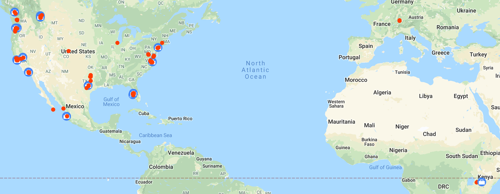

It’s 2020 and as usual it’s time to reflect on the previous year.
Checkout some of the previous years:
Goals
At the beginning of 2019 I had some specific goals in mind and ehh, I did alright.
- Exercise: I did well for the first half of the year but then drifted out of a routine. I’m now down to about 1 day or less a week.
- Writing: I made 5 posts in 2019, a far cry from weekly but they were spaced out throughout the year so at least I was consistent. I also refreshed the style of this blog pretty substantially.
- Finishing: I didn’t release the beach app. It’s barely received any attention at all and I think I’m steering away from working on it further. I think there are two main reasons for this. I’ve been favoring backend technologies with which this doesn’t align and I’ve been away from computers more in general.
- Reading: I haven’t really been reading more. But not less either?
- Plants: I bought 3 plants and they are all still alive!
- Travel: I blew this one out of the water and went on a ton of trips.
- Lifestyle: Traveled quite a bit with friends & made some new ones along the way. I’m in a pretty good place socially right now. I love living in San Francisco.
Travel
Google Maps has a fabulous feature… It tracks your location everywhere all the time. It’s creepy but I love it. Here’s a map of almost everywhere I went in 2019.

There’s too many individual locations to list so instead how about some stats?
- Overnight Trips: 16
- Flight Segments: 43
- Cruises: 2
- Ubers & Lyfts: 93
- US States: 11
- Countries: 5
I had a blast in 2019 and hope to travel more in 2020. The only thing related to travel that I really want to change in 2020 is that I’d like to use my time more efficiently when traveling. It’s still somewhat challenging to work while in an airport or on an airplane so I’m going to work on strategies that make that time more productive. I’m writing this on a plane now so I think im already making progress on this goal.
Hello Dropbox
My career shifted somewhat in 2020. Most notably near the beginning of the year HelloSign was acquired by Dropbox and is now “HelloSign, a Dropbox Company”. This has created some new opportunities for me and has been an interesting transition from a small company to a larger company. At over 2,000 full time employees dropbox we’re not about 20x larger but really that’s still not a big company. More notably Dropbox has very common name recognition, most places I go now people know who I work for which is kind cool! I was hoping to work for a larger tech company at some point so this aligned well, I just wasn’t expecting that it would happen in 2019.
I also switched teams to one with significantly more autonomy. This is a blessing and a curse, on one hand ive had more creative influence over the direction of my team however I am also more responsible which is moderately more stressful. This is still getting started and im looking forward to see how things develop.
The acquisition changed my commute in both good and bad ways. Initially it went from a 15 min train ride to about 60 minutes. However this has been slowly but steadily improved and by combining several transit options im back down to about 20 minutes. In a normal day I might walk, ride a bike, catch a bus, catch a shuttle, and/or call an uber. It’s a little annoying that it’s never the same, but it works! I’ve also been surprised how sometimes the bus system can be faster then uber and have been taking buses in general more frequently.
Goals for 2020
My goals in 2020 are less specific then last year and im mostly looking forward to enjoying this year.
I dont see much of a reason to change too much so ill limit it to 3 this year.
- I’m hoping to get a promotion and I’d like to really succeed in that role.
- I’d like to be healthier however I don’t have a specific goal. I’ve started this already a little by adding biking to my commute. I’d like to get back to a gym routine in some fashion.
- I want to read & write more then last year. As part of that I want to remodel this website some and make it more generic by shifting it to a new domain
meh.dev. Last year I wrote a lot privately but very little of it made it onto this blog, this year im going write more things that i’ll save as drafts for this blog instead of private notes, maybe that will make it easier to publish more content and be more confident about what I publish.